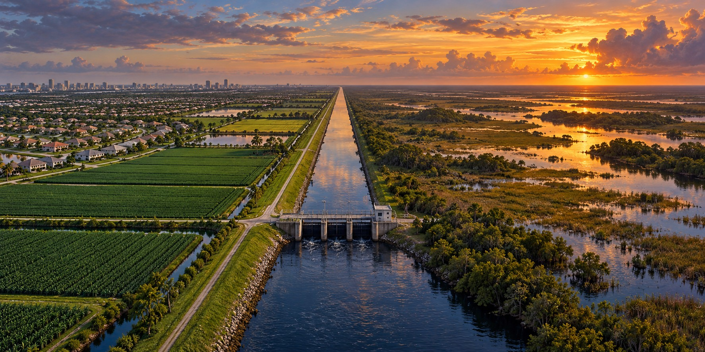

Take Care of the Water
What South Florida’s Water System Has Given, and What It Has Cost

The National Park Service, an agency with every reason to advocate for the Everglades, states a fact plainly: without flood protection, most of south Florida would be unsuitable for existing urban and agricultural uses. About nine million people live in the sixteen counties served by the South Florida Water Management District, and almost none of their cities, farms or communities would exist in present form without the dike, canals and pumps built across the last century. The same system has also cost the land a great deal. This article holds both halves of the story together.
What the System Actually Built
The Central and Southern Florida Project, and the South Florida Water Management District that inherited it, protect water supply and flood control for more than nine million residents across sixteen counties, moving roughly twenty million acre-feet of water a year. The citrus groves, cattle ranches and vegetable farms south of the lake sit on land that would revert to seasonal marsh without it. Miami, Fort Lauderdale and the southeast coast depend on the same system for flood protection and for the freshwater pressure that keeps saltwater out of the aquifers they drink from.
What It Cost the Land Itself
The Everglades has lost habitat as drainage, agriculture and urban growth changed South Florida. Altered water depth, timing and distribution affect wetlands and the wildlife that depends on them. Protecting an endangered species such as the snail kite requires attention to those conditions, not simply a larger volume of water delivered at any time.
A Plan to Undo What the Plan Itself Caused
Congress authorized the Comprehensive Everglades Restoration Plan in 2000, a federal-state partnership of more than sixty project elements aimed at capturing freshwater now pumped out to the Atlantic and Gulf and sending it south into the Everglades. Its founding irony is that it partly reverses the effects of the 1948 Central and Southern Florida Project that made modern South Florida possible.
Restoration is a long sequence of projects rather than one construction job. Planning, land acquisition, water treatment and operating rules must work together. A completed reservoir cannot deliver its intended benefit without suitable treatment capacity and a way to move that water to the places that need it.
Three Decades to Unbend a River
Not every effort has fallen short. The Kissimmee River Restoration Project, a non-CERP effort authorized in 1992, with major construction beginning in 1999, set out to undo channelization the Army Corps of Engineers had performed decades earlier, and was reached construction completion in 2021. The National Park Service has also cited the Combined Operational Plan at Everglades National Park, which uses new flood-management infrastructure to control water better, as good news for plants, animals, drinking water and the economy, with specific flood-protection gains for the agricultural Redlands near Miami.
Still Choosing Between the Lake and the Rivers
The dike’s rehabilitation reduced historic safety concerns, but managing excess lake water still involves tradeoffs. Senate Bill 10, enacted in 2017, directed expedited planning for southern storage. The EAA reservoir is designed to hold 240,000 acre-feet and work with treatment areas to reduce harmful estuary discharges and send cleaner water south.
Holding Both Truths at Once
The system made modern South Florida physically possible and protected nine million people. The same system measurably degraded one of the most significant wetland systems in North America. “Take Care of the Water” is not a slogan separate from that history. It is the lesson of a century of disaster and restoration: in a state built around managing water, safety has a continuing cost, and an honest account keeps both the benefit and the cost in view.
Quick Facts
| What it protects | Flood control, water supply and saltwater-intrusion control for more than 9 million people in 16 counties |
|---|---|
| Everglades today | Roughly half its historical extent |
| CERP | Authorized 2000; federal-state partnership; more than 60 project elements |
| Kissimmee River | Authorized 1992; major construction 1999–2021 |
| Combined Operational Plan | NPS: good news for the ecosystem and for Redlands flood protection |
| 2017 state law | Senate Bill 10 accelerated a southern reservoir plan; design storage 240,000 acre-feet |
Did You Know?
The Kissimmee River was straightened by the Corps and later partly un-straightened by the same agency.
The system moves roughly twenty million acre-feet of water a year.
Vocabulary
Acre-foot: the volume of water that covers one acre to a depth of one foot, about 325,851 gallons.
Channelization: straightening and deepening a river into a canal.
Saltwater intrusion: the movement of seawater into freshwater aquifers.
Discussion Questions
1. Why does the article say both the benefit and the cost of the water system are true at once?
2. What does the Kissimmee River project suggest about undoing earlier engineering?
Related Articles
FLH-0025 — The Flood That Changed South Florida
FLH-0026 — Building the Herbert Hoover Dike
FLH-0027 — Why Lake Okeechobee Became Dangerous
FLH-0028 — Hurricanes and the Everglades
Sources
South Florida Water Management District. “Everglades,” “CERP Project Planning,” and “75th Anniversary and Ongoing Restoration Efforts.” sfwmd.gov
U.S. National Park Service. “New Water Plan for South Florida Is Good News for Everglades National Park” and “Comprehensive Everglades Restoration Plan (CERP).” nps.gov
Congressional Research Service. “Recent Developments in Everglades Restoration” and “Everglades Restoration: Federal Funding and Implementation Progress.” congress.gov
Everglades Restoration Initiatives. “Comprehensive Everglades Restoration Plan (CERP).” evergladesrestoration.gov
National Research Council. Progress Toward Restoring the Everglades: The Fourth Biennial Review, 2012. National Academies Press.
SFWMD — Kissimmee River restoration chronology
Florida Senate — Senate Bill 10 summary and funding